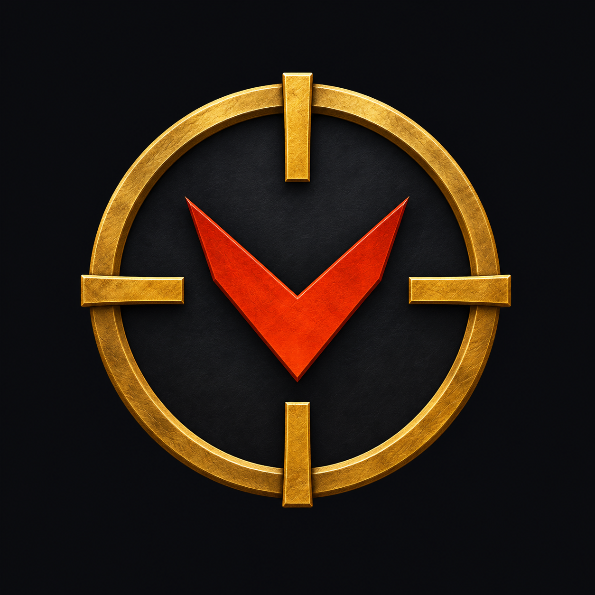
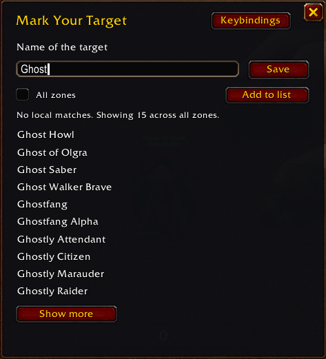

World of Warcraft: Forever add-on
Mark Your
Target
Keep one targeting macro on your bar. Type /myt to pick a mob, or enter /myt Ghostmaw to update the macro from chat.

In game



Install and use
- Extract the download into
_forever_/Interface/AddOns/and restart WoW. - Type
/mytor click the skull icon in MinimapButtonButton. - Choose an NPC, save out of combat, and drag the macro to your action bar.
- Once the macro is on your bar, type
/mytfollowed by an NPC name to swap targets from chat.